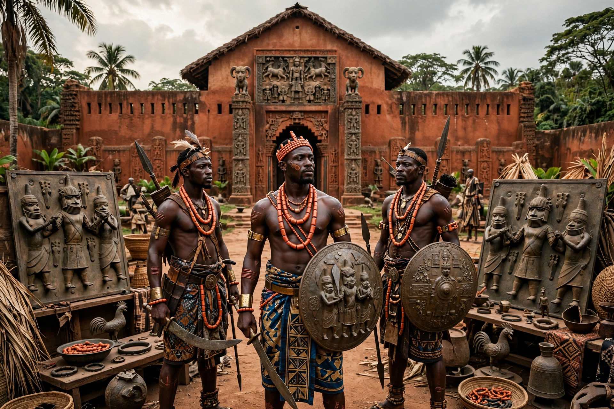

| Kingdom of Benin | |
|---|---|
 | |
| Capital | Benin City |
| People | Edo |
| Ruler | Oba |
| Period | c. 1180 – 1897 |
The Kingdom of Benin, in what is now southern Nigeria (unrelated to the modern Republic of Benin), was a major West African state of the Edo people, famed for its city planning, earthworks and bronze art.
Tradition traces the Ogiso (sky kings) dynasty and, from around the 12th–13th century, the Oba dynasty founded with Oranmiyan from Ife. Under Oba Ewuare the Great (r. c. 1440–1473) Benin City was fortified and the kingdom expanded. Benin traded pepper, ivory and later other goods with the Portuguese from 1485, often restricting slave exports.
Guilds of brasscasters in Benin City produced the celebrated Benin Bronzes — plaques, heads and figures cast by lost-wax. The city's walls and moats formed one of the world's largest earthworks.
In 1897 a British punitive expedition captured and burned Benin City, exiled Oba Ovonramwen, and looted thousands of artworks into Western museums. The monarchy was restored in 1914, and restitution of bronzes has accelerated since the 2020s.